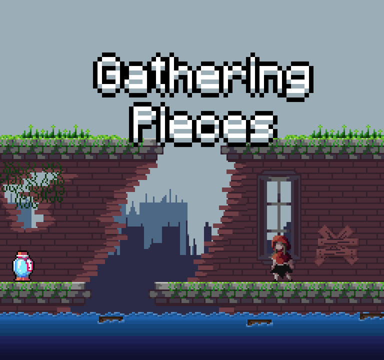
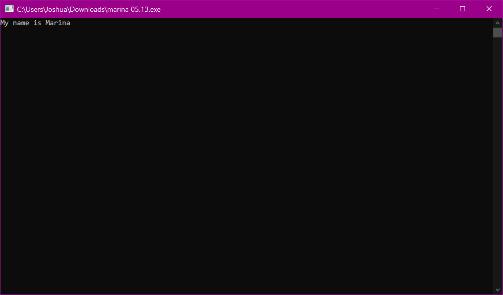

Joshua B. Villalobos
4th Year BSCS Major in Game Development
About Me
I am a 4th Year I am a 4th Year Bachelor of Computer Science student Majoring in Game Development. I have a passion for games, and it has been a dream for me to work in the gaming industry. I have worked with Unity for almost 2 years now as part of my Thesis course, developing a game titled, "Gathering Pieces". I have an avid interest in creating art, and a passion for writing stories. Those combined are my reasons why game development interest me. I love making compelling stories that players are able to experience as they are playing.
Gathering Pieces
Gathering Pieces is a 2D Puzzle Platformer about the dangers of Climate Change. It was developed for our Thesis course. Gathering Pieces was the culmination of all that I've learned while studying at De La Salle Lipa. I developed the game with two of my classmates, and served as a de facto leader for our group. I handled the documentation and most of the front-end coding for the story and general movement. I also created a few custom systems to manufacture how the game functions, like pseudo-cutscenes, and music shifts. I was also in charge of most of the bug squashing and game testing. We spent almost two years on development as part of our Thesis course. Pictured above is the game's poster.
Google Drive link Marina
Marina is a short text-based horror game that I developed for my Discrete Mathematics course. It's written on C++ a few years ago and I've just recently rediscovered it. It's a fun little project that I made when I barely knew anything about programming. It's inspired by the horror visual novel "Doki Doki Literature Club".
Google Drive link